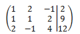

Contoh Numerik
Misalnya, sebuah sistem umum yang terdiri dari m persamaan linear dengan n bilangan yang tak diketahui akan kita tulis sebagai :
Penulisan tikalas ganda pada koefisien bilangan tak diketahui adalah sebuah alat yang berguna yang akan kita terapkan untuk menyatakan letak koefisien dalam sistem tersebut. Tikalas pertama pada koefisien 𝑎_𝑖𝑗 menunjukkan persamaan yang muncul pada koefisien tersebut, sedangkan tikalas kedua menunjukkan bilangan tak diketahui yang dikalikan oleh koefisien tersebut. Jadi, 𝑎_12  terdapat pada persamaan pertama dan mengalikan bilangan tak diketahui 𝑥_2Â
Jika kita telusuri letak +, letak x, dan letak =, maka sistem yang terdiri dari m persamaan linear dengan n bilangan tak diketahui dapat disingkat dengan hanya menuliskan jajaran empat persegi panjang dari bilangan-bilangan:
Jajaran ini kita namakan matriks yang diperbesar (augmented matrix) untuk sistem tersbut. Untuk melukiskannya, maka matriks yang diperbesar untuk sistem persamaan-persamaan

adalah :
Bila kita membentuk sebuah matriks yang diperbesar, maka bilangan-bilangan tak diketahui harus dituliskan dalam urutan (orde) yang sama dalam masing-masing persamaan.
Langkah-langkah Back Substitution pada Hasil Gauss Elimination
Definisi Backsubstition :
Konsep Dasar, Back substitution adalah teknik yang digunakan untuk menemukan solusi dari sistem persamaan linier setelah matriks augmented mengalami proses reduksi menjadi matriks segitiga atas melalui metode Gauss Elimination. Langkah ini dilakukan dari baris terbawah menuju baris teratas, menggantikan nilai yang telah diketahui ke dalam persamaan untuk menghitung nilai variabel yang tidak diketahui.
Proses Eliminasi Gauss :
Ubah dulu menjadi bentuk matriks yang diperbesar :
Ubah menjadi bentuk eselon baris dengan melakukan operasi baris elementer.
Ubah lagi menjadi persamaan :
Lakukan substitusi balik :
Jadi, solusi SPL tersebut adalah {1,2,3}